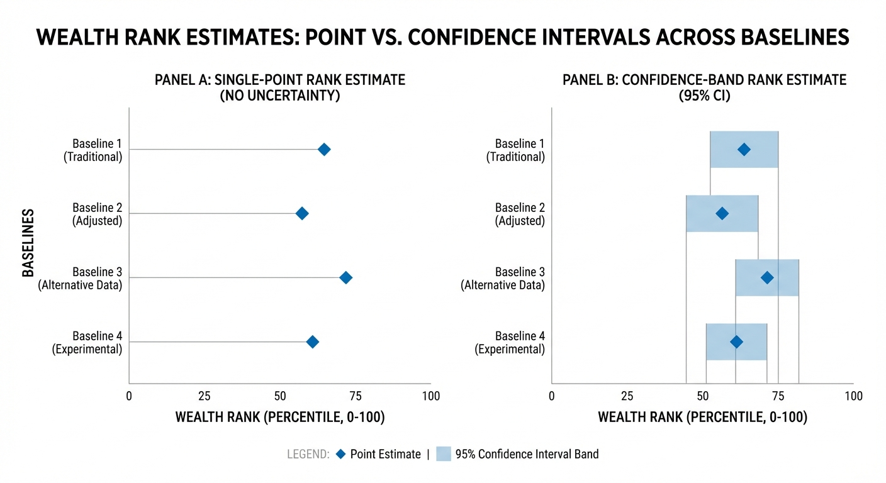

The Great Baseline War: Why Your Wealth Rank Changes Depending on Which Population You Compare Against
Your net worth can stay constant while your percentile shifts dramatically, simply because the comparison population changed.
Ask a simple question online, and you get a civil war in the replies. “Is a $1 million net worth rich?” One side says absolutely. Another says not even close in major metro areas. Both post charts. Both cite data. Both sound certain. The argument never resolves because each side is answering a different question while pretending it is the same one. This is the baseline problem, and it is now one of the most important blind spots in wealth conversations.

The short version is this: your wealth rank is not a single truth. It is a function of who you compare against, what assets are counted, how values are converted across countries, and what point in time you choose. Change the comparison population, and your percentile can move dramatically without your finances changing at all. That is not data manipulation. It is statistics. The mistake is not choosing one baseline. The mistake is using one baseline for every decision.
This post is about making that visible and usable. We are going to break down why rankings shift, how global and national methodologies differ, why online debates around UBS and global wealth metrics keep flaring up, and how to build a practical multi-baseline framework you can actually use for decisions. If you run a wealth product, this is product logic. If you manage your own money, this is interpretation logic.
The Core Mechanism: Rank Is Relative, Not Absolute
Net worth is an absolute measure. Percentile rank is a relative measure. If you have $800,000 net worth, that dollar figure is your figure regardless of context. But percentile rank depends on the reference distribution. In one population, $800,000 might place you near the top decile. In another, it might be middle-upper but not extraordinary. In a global distribution that includes large low-asset populations, the same number can place you far higher. The person did not change. The denominator changed.
Most ranking disputes happen because people blend absolute and relative statements. “I have X net worth” is absolute. “I am rich” is relative and value-laden. The moment “rich” enters the discussion, baseline selection becomes unavoidable. If baseline selection is implicit, confusion follows.
This is exactly why the baseline war became so visible in recent years. Wealth reporting became more mainstream, macro shifts made local affordability harsher, and more people began sharing percentile calculators online. Users noticed that one tool said they were “top tier” while another made them feel average. Both could be internally correct and still contradictory at the emotional level.
Why UBS-vs-Global-Adult Debates Keep Exploding
The most viral version of this argument usually references global wealth reports. UBS’s Global Wealth Report, for example, is widely cited in discussions of household wealth distribution across countries and over time (UBS, 2025a). Readers then map those findings directly to personal identity statements: “I am in the top X globally, so I am rich.” Critics respond: “That is irrelevant to my local housing and education costs.” Then the thread collapses into two camps accusing each other of bad faith.
The underlying issue is not that either side cannot read data. It is that they are solving different optimization problems. Global-adult baselines are useful for macro perspective, global inequality context, and long-run wealth concentration analysis. Local and national baselines are useful for lifestyle feasibility, housing affordability, and social benchmark decisions in a specific economic environment. If you use a macro baseline for micro budgeting, you can overestimate your practical room. If you use only local baseline for global context, you can underestimate your absolute position and risk over-defensiveness in portfolio behavior.
The correct move is synthesis, not side-picking. Use global baseline for perspective and ethical context. Use national baseline for policy and broad-market positioning. Use local baseline for day-to-day decision relevance. Tools that force one number without context invite confusion by design.
The Four Baselines That Matter Most
1) Global adult baseline. Useful for understanding where a household sits relative to worldwide wealth distributions. Good for perspective and cross-country context. Weak for local lifestyle decisions because purchasing environments differ dramatically.
2) National household baseline. Useful for comparing within one country’s tax, labor, and institutional structure. Good for broad domestic benchmarking. Still too coarse for city-level housing and service-cost realities.
3) Local metro baseline. Useful for real-life feasibility. This is where housing, childcare, healthcare access, and local tax pressure show up. High relevance for life decisions; lower relevance for global context claims.
4) Life-stage peer baseline. Useful for trajectory planning. Comparing a 31-year-old dual-income household with no kids to a 57-year-old near-retirement household can distort interpretation. Stage-adjusted baselines reduce false confidence and false panic.
Each baseline can be “true” for its purpose. The baseline war exists because most conversations do not label purpose first.
Methodology Drift: Why Tools Can Disagree Even with the Same Baseline
Even before baseline selection, methodology choices shift rankings. Here are common sources of drift.
Asset scope. Does the tool include primary residence equity at full value? Partial value? How does it treat pensions, restricted stock, private business ownership, collectibles, and debt timing?
Valuation timing. Is it using current market values, annual averages, or lagged official datasets? A fast-moving market can make two “current” ranks look different simply due to data latency.
Currency and purchasing adjustments. Cross-country comparisons often require conversion assumptions. Nominal exchange rates and purchasing-power dynamics can produce different narratives.
Unit of analysis. Adult individual, household, tax unit, or equivalent-adult adjustment? Rankings change when the comparison unit changes.
Data source quality. Survey-based measures, tax data, model-based imputations, and private-database estimates all carry strengths and limitations. Combining them without clear caveats can inflate precision beyond what is justified.
When users see rank shifts across tools, they often assume one is wrong. Frequently, both are mathematically coherent under different assumptions. What users need is transparent metadata, not louder marketing language.
Case Study: The Same Household, Three Percentiles
Imagine a household with $1.4 million net worth: $850,000 primary residence equity, $300,000 retirement accounts, $180,000 taxable investments, $70,000 cash, no high-interest debt. In a global adult comparison, that household may rank very high. In a U.S. national household comparison, still strong but less extreme. In an expensive metro where housing and private education costs are elevated, their practical flexibility may feel tighter than rank implies, especially if liquid assets are modest relative to annual fixed expenses.
The household did not become poorer between these views. The interpretation changed with the decision question. Are they globally privileged? likely yes. Can they absorb a job loss in that metro without lifestyle compression? maybe less certain. Can they retire in place with current spending habits? depends on return assumptions, tax burden, and housing cost trajectory. Three different questions, three different conclusions, same balance sheet.
This is exactly why one-number wealth badges can mislead users into bad decisions. If a high global percentile causes overconfidence in local affordability choices, the badge did harm even if numerically accurate in its own frame.
The Product Problem: Most Wealth UX Is Single-Lens
Many calculators default to one reference population because simple outputs convert better. A single percentile is easy to screenshot and share. A multi-lens explanation is cognitively heavier. But simplicity can become distortion if users act on it as comprehensive truth.
A stronger product pattern is a baseline stack with explicit purpose labels. Example output:
Global lens: High percentile, strong absolute standing.
National lens: Upper cohort, but not top-end concentration tier.
Local lens: Moderate-to-strong, with housing-cost sensitivity.
Life-stage lens: Above median trajectory, concentration risk elevated.
This approach reduces emotional whiplash and improves planning quality. It also builds trust because users can see why ranks differ instead of assuming the app is inconsistent.
The Emotional Side: Why Baseline Choice Feels Moral
People rarely debate baselines as neutral math. They treat baseline choice as a moral statement about fairness, struggle, and identity. Someone citing global ranking may be emphasizing perspective and gratitude. Someone citing local pressure may be emphasizing lived cost realities and insecurity. Both can feel morally urgent to the speaker.
That is why baseline arguments become personal quickly. They are usually proxy arguments for recognition. “See my privilege context.” “See my cost pressure context.” A better wealth conversation acknowledges both and then selects the baseline that matches the specific decision at hand.
For content strategy, this matters. Posts that only tell readers they are “actually rich” can feel dismissive of local pressure. Posts that only validate scarcity narratives can ignore genuine absolute gains and resilience opportunities. The best longform content does both: context and constraint in one frame.
How Baseline Error Distorts Real Decisions
Housing decisions. Using a global percentile to justify aggressive local housing leverage can backfire when local carrying costs dominate cash flow.
Lifestyle inflation. A flattering rank can reduce caution right before a rate or employment regime shift.
Portfolio risk. Feeling “middle” in a high-cost peer cohort can push over-concentration in search of faster status gains.
Retirement timing. National percentile comfort can hide local expense mismatch and longevity risk.
Intergenerational planning. Family support expectations often follow local norms, not global medians, so baseline mismatch can understate future obligations.
Baseline error is not just a communication issue. It is a compounding decision-quality issue.
A Practical Multi-Baseline Framework You Can Use This Month
Step 1: Define the decision category first. Are you deciding housing, spending, portfolio risk, career mobility, or legacy planning?
Step 2: Select the primary baseline for that category. Local for housing and spending, national for policy-relative positioning, global for perspective and broad inequality context.
Step 3: Add one secondary baseline as a check against overfitting. If local pressure is your primary lens, add national or global as a perspective stabilizer. If global is your primary lens, add local as a feasibility stabilizer.
Step 4: Explicitly separate status questions from solvency questions. Status is comparative. Solvency is mechanical. Never let a status percentile substitute for a solvency test.
Step 5: Track trend direction in each baseline over time rather than obsessing over one snapshot rank. Direction is often more useful than position.
This structure prevents most baseline mistakes while keeping the analysis readable.
Building “Rank Confidence Intervals” Instead of False Precision
Another useful idea is confidence intervals for rank outputs. Because data is noisy and methodology choices differ, apps can show a percentile band rather than a single number, especially when valuation inputs are uncertain. For example: “Estimated U.S. household percentile: 78 to 84 depending on housing valuation and private-asset assumptions.” This signals uncertainty honestly and discourages overconfident interpretation.
Confidence intervals are common in serious data work. Personal finance tools rarely use them because they are less shareable. But they are exactly what users need when comparing across datasets with different update frequencies and modeling assumptions.
A Better Language for Wealth Conversations
Replace vague “rich/not rich” language with operational categories:
Absolute wealth: raw balance-sheet capacity.
Relative rank: position within a defined population.
Functional wealth: liquidity-adjusted ability to make choices.
Durable wealth: resilience across macro regimes and life shocks.
Once people adopt this vocabulary, arguments cool down because categories stop collapsing into one overloaded term. You can have high absolute wealth, moderate local rank, strong functional wealth, and fragile durability if concentrated risk is high. The language lets that complexity exist without contradiction.
What This Means for WealthMeter Logic
If your core product is ranking and percentile-based interpretation, baseline architecture is not an optional feature. It is the foundation. A robust implementation should include labeled lens toggles, methodology notes, and decision-linked interpretations. Users should understand why their rank changes when baseline changes. They should also see which lens is recommended for each decision category.
A practical interface pattern is “Primary Lens + Context Lens.” For example, when users model a home purchase, local lens becomes primary and national lens appears as context. When users explore long-term status and inequality context, national or global can become primary with local feasibility shown alongside. This keeps the product useful and honest at the same time.
A second useful feature is “Baseline Drift Alerts.” If a user’s nominal net worth is rising but local lens percentile is flat or falling due to cost pressure, the app should surface that divergence and suggest relevant actions. This is exactly the kind of insight that turns rank data into planning value.
What Is Overstated in Baseline Debates
Overstatement 1: “Global percentile is meaningless.” False. It is meaningful for perspective and macro context. It is just not sufficient for local planning.
Overstatement 2: “Local baseline is all that matters.” Also false. Local lenses can distort perspective and increase status anxiety if used alone.
Overstatement 3: “One accurate percentile settles everything.” False by construction. Percentile is conditional on definition and dataset.
Overstatement 4: “If two tools disagree, one is broken.” Sometimes true, often not. Many disagreements are assumption-driven, not error-driven.
A 12-Month Baseline Discipline Plan
Quarter 1: Build your baseline dashboard with global, national, local, and life-stage views. Document data sources and update cadence.
Quarter 2: Tie each major financial decision to a declared primary baseline. Add a secondary baseline as a guardrail.
Quarter 3: Audit outcomes versus predictions. Where did baseline choice improve decisions? Where did it mislead?
Quarter 4: Refine assumptions and add uncertainty bands for high-variance asset classes and housing values.
By the end of a year, most households and products will have much higher interpretation quality with minimal extra complexity.
Where This Goes Next
As wealth tooling becomes more mainstream, baseline literacy will become a competitive edge. The next generation of products will likely move away from single-score status outputs toward contextual decision systems. Users will expect to see not just where they rank, but why that rank changes across populations and what action each lens implies.
Speculation, clearly labeled: Over the next three to five years, the most trusted wealth interfaces will treat rank as a dynamic map rather than a trophy number. Products that keep one-number simplicity may still perform well in social sharing, but products that explain baseline context will likely win on retention and real financial outcomes.
Closing Reality Check
The baseline war is not going away because it reflects a real truth: wealth has multiple valid interpretations. The answer is not to pick a tribe. The answer is to match baseline to purpose. Global for perspective, national for structural comparison, local for lived feasibility, life-stage for trajectory realism. Once you do that, the conflict becomes a toolkit.
If you take one thing from this post, let it be this: when your rank changes after you switch populations, that is not your finances changing. That is your frame changing. Use the right frame for the decision in front of you, and your wealth logic gets dramatically better.
City Example: Why Local Baselines Can Overrule National Confidence
Suppose two households each have $950,000 net worth and similar income. Household X lives in a high-cost coastal metro, Household Y in a lower-cost inland city. Nationally, they might appear very similar in percentile terms. Locally, their practical trajectories can diverge quickly. Household X faces higher housing carrying costs, higher childcare and service inflation, and greater tax drag from cost structure. Household Y may convert the same nominal balance sheet into faster savings growth and lower stress volatility because essential-cost ratios are lower.
This is where local baselines become decision-critical. If Household X uses only national percentile confidence, they may underestimate vulnerability to local fixed-cost shocks. If Household Y uses only local lens, they may underestimate absolute positioning and over-tilt toward unnecessary risk chasing. Again, the answer is layered interpretation, not one “correct” ranking.
For product design, this suggests a useful feature: a cost-pressure overlay that sits next to rank outputs. A user can be shown as “nationally upper cohort” while receiving a local pressure warning based on housing burden and essential-spending ratio. That message is more honest and more useful than a celebratory badge alone.
Age and Family Structure: Hidden Baseline Distortions
Another major distortion source is age composition. Wealth accumulates nonlinearly across the life cycle. Comparing a 28-year-old single professional to a 58-year-old dual-income household using a single unadjusted baseline produces noise. The younger user may appear “behind” despite being on an excellent trajectory. The older user may appear “safe” despite looming retirement drawdown risk.
Family structure adds another layer. A one-income household with dependents and a two-income household without dependents can share the same nominal net worth and still face very different resilience profiles. If tools ignore household composition, users infer false equivalence from percentile proximity.
Life-stage baselines reduce these errors. They are not perfect, and sample sizes can be noisy in narrow cohorts, but they improve interpretation quality substantially when used as a complement to national and local views. A user should be able to see “overall percentile” and “stage-adjusted percentile” side by side with plain-language caveats.
The Tax Baseline: Often Ignored, Often Decisive
Many wealth comparisons treat gross net worth as if after-tax usability is similar across households. It is not. Account location, cost basis, state tax structure, and realized vs unrealized composition can produce big differences in spendable wealth. Two households with identical gross net worth can have materially different after-tax liquidation profiles.
A practical extension is to add an after-tax optionality estimate. The goal is not perfect tax forecasting. The goal is directional realism. If one user’s wealth is concentrated in high-gain taxable positions and another’s in diversified tax-advantaged structures, they should not receive identical practical-risk interpretation just because gross percentile matches.
This matters especially when users are considering life transitions such as relocation, entrepreneurship, or early retirement. Gross percentile optimism can collapse when tax realization, transaction costs, and financing resets are modeled together.
When Baselines Should Trigger Different Actions
A high global percentile with weak local resilience should trigger defensive actions: liquidity strengthening, fixed-cost management, and concentration reduction.
A strong national percentile with weak life-stage percentile may trigger acceleration actions: savings-rate increases, career-capital investments, and debt optimization.
A weak national percentile with strong local affordability and high savings momentum may trigger patience actions: avoid over-leverage, continue compounding, reduce comparison anxiety.
A strong local percentile with concentrated risk may trigger risk-balancing actions: diversify exposures and build scenario-proof reserves.
This is why baseline frameworks should be action-linked. A rank without prescribed next steps is entertainment. A rank tied to decision pathways is planning.
How to Explain Baseline Shifts to Users in Plain Language
Most users do not need statistical lectures. They need concise interpretation text that removes false contradiction. Example messaging patterns:
“Why did my rank change?” Because this view compares you to a different population with different wealth distribution characteristics.
“Which rank should I trust?” Trust the rank that matches your decision. Use local for affordability decisions, national for broad domestic context, global for perspective.
“Am I getting richer or not?” Track your absolute net worth trend and your functional resilience trend. Rank alone cannot answer this.
“Why do two apps disagree?” They may use different assumptions on asset valuation, population unit, and data timing. Compare methodology notes before conclusions.
Clear interpretation copy can reduce user confusion more than additional chart complexity. In many cases, language design is as important as model design.
The Media Layer: Headlines Optimize for Conflict, Not Clarity
Public debates around wealth baselines are intensified by headline incentives. “You are richer than you think” and “You are poorer than you realize” both perform well because they trigger identity reactions. Neither headline is useful without baseline disclosure. Content that wants long-term trust has to resist binary framing and explain conditional truth explicitly.
This is also why longform remains valuable in a short-form ecosystem. Threads and clips can surface the question, but they usually cannot hold the methodological nuance needed to resolve it. A robust article can do the integration work: explain why data points conflict, then provide a framework readers can reuse.
Implementation Blueprint for a Multi-Baseline Calculator
Data layer: Ingest distributions for global, national, and local lenses with clear update cadence metadata.
Model layer: Standardize wealth input taxonomy and expose assumption toggles for housing, private assets, and retirement account treatment.
Output layer: Render rank per lens, confidence bands, and explicit interpretation notes.
Action layer: Link each lens result to practical recommendations by decision type.
Trust layer: Show “why this changed” explanations when user assumptions or data versions change.
This architecture turns baseline diversity from a support burden into a product advantage. Instead of hiding differences, it makes differences informative.
A Quick Diagnostic You Can Run on Any Wealth Claim
When you read any wealth ranking claim, ask five questions:
1. What is the exact comparison population?
2. Is the unit adult, household, or tax unit?
3. What assets and liabilities are included or excluded?
4. What is the valuation date and data lag?
5. What decision is this claim supposed to inform?
If the source cannot answer these clearly, treat the ranking as directional content, not a planning-grade metric. This habit alone can prevent many expensive interpretation mistakes.
The Strategic Takeaway for Readers and Builders
For readers, the strategic move is to stop searching for one definitive rank and start building a baseline stack that matches your actual decisions. For builders, the strategic move is to stop pretending one percentile can carry every interpretation and instead design for contextual clarity.
The baseline war feels chaotic only when baseline logic is hidden. Once baseline logic is explicit, disagreement becomes useful information. You can hold global perspective, national context, and local realism at once. That is not indecision. That is mature wealth analysis.
Key Takeaways
Your wealth percentile is always conditional on the population and method used.
Global, national, local, and life-stage baselines each answer different valid questions.
Single-lens rank outputs can produce bad decisions when used outside their intended context.
The practical fix is a multi-baseline framework with explicit decision-purpose matching.

Source List
UBS (2025). Global Wealth Report 2025
UBS (2025 media release PDF). Global Wealth Report 2025 media release
Federal Reserve (2023). Changes in U.S. family finances from 2019 to 2022
Federal Reserve (2023 PDF). Survey of Consumer Finances bulletin
World Bank Open Data. Global population and economic context datasets
Stress-test the lifespan side of this balance-sheet story.
Open the matching LifeMeter scenario with a prefilled planning profile so the wealth case and the health-runway case can be read together.